Natsumi Sugiyama is an artist whose practice asks
how environments are experienced, remembered and transformed,
through installation, moving image and drawing.
環境はどのように経験され、
記憶され、変容していくのか。
マルチメディアによる研究と制作の実践
- 2026Content Structure: Language App for Childrenapp content, visual content, workshop composition
- 2025Portraits of (Places)mixed media object, exhibition
- 2025Multimedia Illustrationmobile app content, visual production
- 2025–2026Visual Identity for a Podcasteditorial graphic
- 2025Information Graphics: FintechInfographic, Content Operations
- 2025–2026Multilingual Content Localisation SupportContent Operations
- 2024Why (& Where) Do I Need to Draw?editorial design, technical coaching, booklet
- 2023Educational Content: Haikumobile app content, visual production
- 2023Educational Content: Kanjimobile app content, visual production
- 2022Recollections of Beyondinstallation, video
- 2022–2024Educational Content: Philosophymobile app, drawing, video
- 2021–2024Mobile App: UX and Art Directionmobile app, video
- 2021Website Graphicswebsite design
- 2020In-Between Places and Humanstext, field research
- 2019Scenery of De/Museumizationinstallation, exhibition
- 2019Exhibition Graphics for a Group Exhibitionwebsite, exhibition, installation
- 2018–2019IMAGINARY BAUHAUS MUSEUM
- 2017Field Notes of Topophiliatext, field research
- 2017StadtGestaltunginstallation
- 2017Pigment Floor Drawinginstallation, exhibition
- 2017Missing Sculpturebook design, bilingual layout
- 2017Un/Sounds of Buchenwaldbooklet design
- 2017–2021Untitledfield research, participant observation
- 2016Sceneriesfield research, photography
- 2016Phenomena, and Symbols of Persuasionmixed media object, drawing, exhibition
- 2016A Dot on a Line, Replaced and Continuingdrawing, photography
- 2015Unerased Remindersinstallation, drawing, exhibition
- 2015Landscapes Narrativesfieldwork, field research, exhibition
- 2015YOU SAY ART I SAY WHATbooklet design, editorial design
- 2015There is an Exhibition in Prison. It is Called CRACK.booklet design, editorial design
- 2015Logo Design for an Art Projectlogo design
- 2014Roppongi, Paralleleddrawing, interview
- 2014About Another's Toposdrawing, field research
- 2014Notation of Topos Phase. 0publication, zine
- 2013About My Toposinstallation, drawing, field research, exhibition
- 2013–2014Hands-on Art Workshop for a Kindergartenworkshop
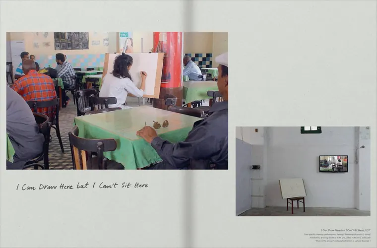
Why (& Where) Do I Need to Draw?
Noor us Sabah Saeed
2024 · Goldrausch Künstlerinnenprojekt, Berlin · 16 pages · English
Editorial design and technical coaching within the artist's practice. Part of Goldrausch Künstlerinnenprojekt, a professional programme for women artists in Berlin.
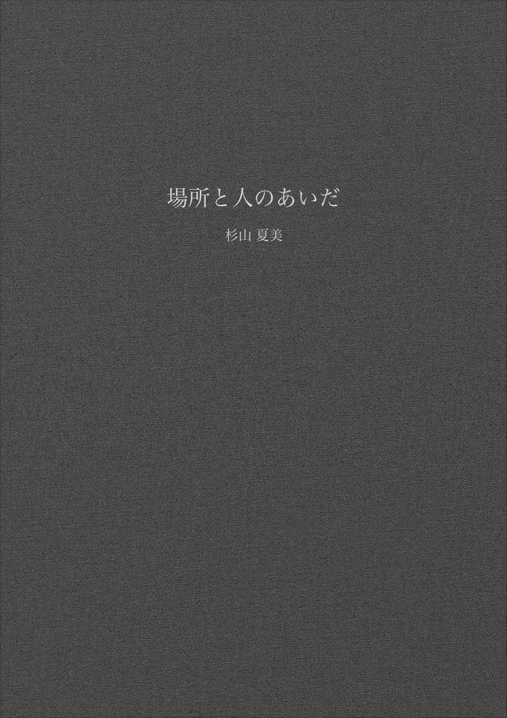
In-Between Places and Humans
2020 · 229 pages · Japanese
Examines the relationship between places and people through field research and projects in various locations. Practice-based doctoral dissertation, Graduate School of Fine Arts, Design, Tokyo University of the Arts.
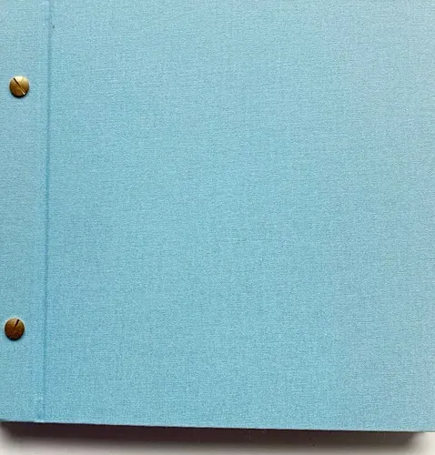
Field Notes of Topophilia
2017 · 63 pages · English
An essay based on field research that takes apart places, environments and their memories in order to think about them.
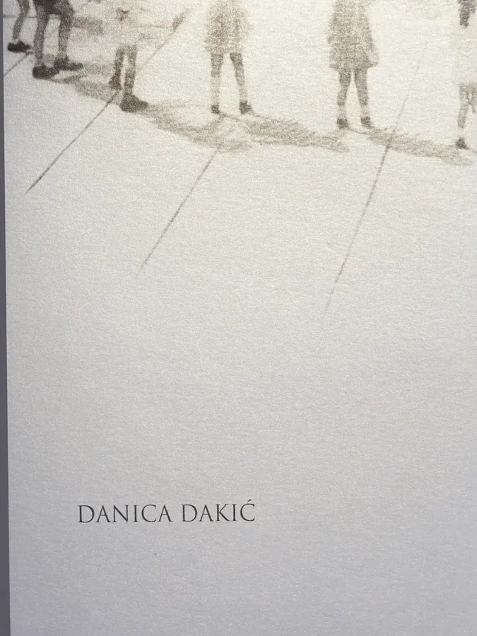
Missing Sculpture
Danica Dakić
2017 · Verlag für moderne Kunst, 2018 · 152 pages · ISBN 978-3-903228-44-3 · English, German
Catalogue of the contemporary artist's work. Bilingual English/German layout. Published by Verlag für moderne Kunst (Vienna).
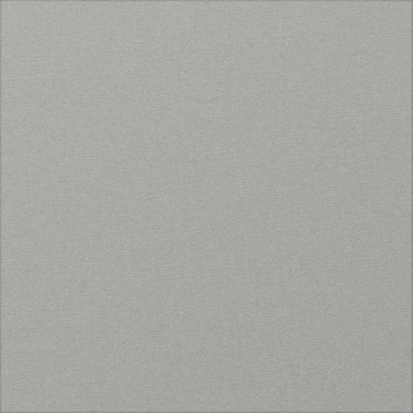
Un/Sounds of Buchenwald
2017 · English
Booklet for an art project at the site of a former concentration camp: a bricolage of resin enclosing rose leaves from the site, holding the sound works.
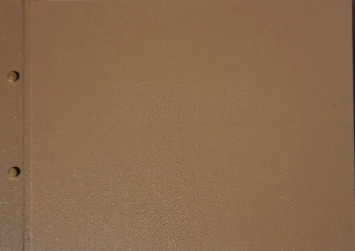
A Dot on a Line, Replaced and Continuing
2016 · 25 pages
An illustrated archive of observations of everyday spaces in a historic apartment building. (Weimar, Germany)
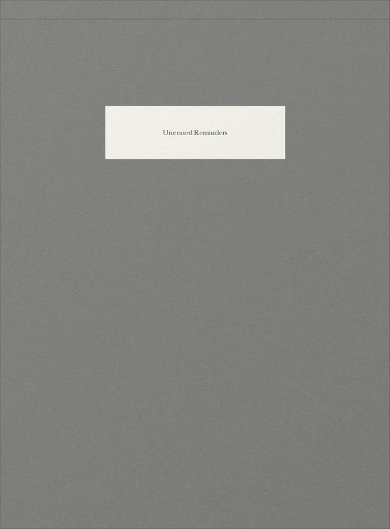
Unerased Reminders
2015 · 6 pages
Observes the traces left in a former youth detention centre and follows, in drawings, what the acts behind them meant. The booklets were installed in the small library inside the prison. (Weimar, Germany)
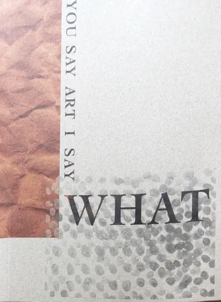
YOU SAY ART I SAY WHAT
2015 · MFA Public Art and New Artistic Strategies, Bauhaus-Universität Weimar (distribution: VERLAK) · 95 pages · ISBN 978-3-00-050776-2 · English, German
Book design for an art project. Bilingual, English/German.
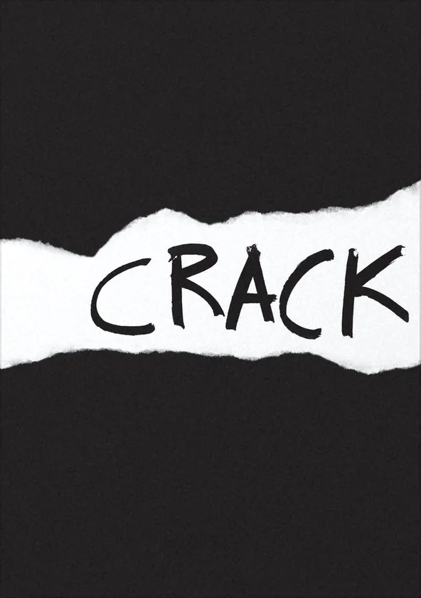
There is an Exhibition in Prison. It is Called CRACK.
2015 · MFA Public Art and New Artistic Strategies, Bauhaus-Universität Weimar · 60 pages · English
Catalogue design for an exhibition project in the former youth detention centre in Weimar, Germany.
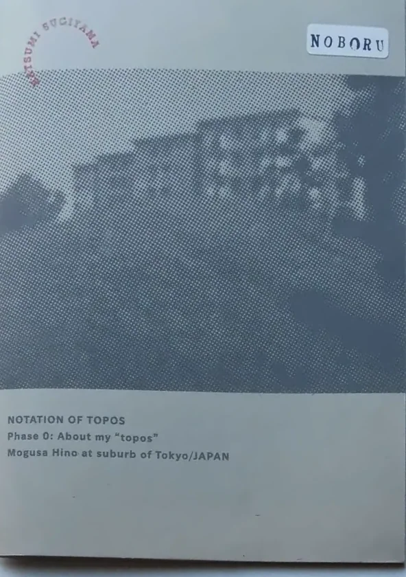
Notation of Topos Phase. 0
2014 · 東京藝術大学大学院 美術研究科 デザイン専攻 視覚・伝達研究室 · Japanese
A zine based on About My Topos, from the zine series Noboru. Published by the Visual Communication Design Lab, Design, Graduate School of Fine Arts, Tokyo University of the Arts.
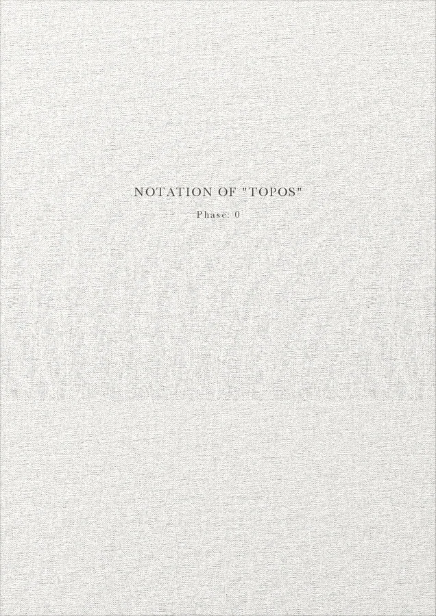
About My Topos
2013 · 26 pages · Japanese, English
A booklet on an installation that analyses and recomposes experiences of an environment in the suburbs of Tokyo.
The bookshelf is being adjusted for phones. For now it is best viewed on a computer.
Selected exhibitions
Sources
About
Natsumi Sugiyama is an artist whose practice examines how environments are experienced, crossed and transformed, drawing on movement across borders, marginalised presences and under-recorded narratives. Working through editorial methods, she composes this work as installation, moving image and drawing. Between 2013 and 2020 her work centred on narratives of place, developed through fieldwork; it now turns to narratives in flux, recomposed across borders.
Born in Tokyo, based in Berlin (as of 2026)
POLA Art Foundation Overseas Research Grant (2017)
杉山夏実（すぎやま・なつみ）｜美術家
人と環境の関係を主題に、移動や越境、周縁化された存在、記録に残りにくい語りを扱う。2013年から2020年にかけては、フィールドワークを通じて場所にまつわる語りを扱ってきた。現在は、異なる場所や文化のあいだを移動するなかで、語りが交差し、変容していく過程に焦点を当てている。編集的な手法を用い、インスタレーション、映像、ドローイングなどを制作する。
東京生まれ、ベルリン拠点（2026年時点）
ポーラ美術振興財団 在外研修員（2017年）
- 2020
- PhD, practice-based, Tokyo University of the Arts
- 2017
- MFA, Public Art and New Artistic Strategies, Bauhaus-Universität Weimar
- 2013
- MA, Design, Tokyo University of the Arts
- BA, Environmental Design, Tama Art University
- 2020
- 東京藝術大学大学院 美術研究科 博士後期課程
- 2017
- ワイマール・バウハウス大学（パブリックアートと新芸術戦略）修士課程修了
- 2013
- 東京藝術大学大学院 美術研究科 デザイン専攻 修士課程修了
- 多摩美術大学 環境デザイン学科 卒業